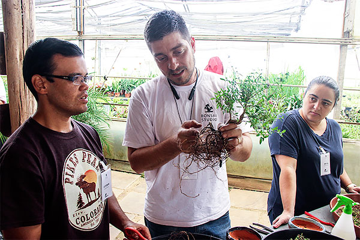

A Escola Bonsai Studio propõe aos alunos aprofundar os conhecimentos da arte do Bonsai em plantas específicas, através de módulos mensais focados nas principais espécies de árvores do mundo utilizadas no cultivo de Bonsai.
veja o conteúdo do cursoAqui devemos falar como se desenvolve a Escola Bonsai Studio. Explicar que o formato da Escola foi desenhado para o aluno aprender em 15 módulos as técnicas do bonsai trabalhando diferentes plantas.
Descrição da Planta / Taxonomia / Origem / Características / Curiosidades.
Cuidados e Desenvolvimento da Árvore / Adubação / Estações do Ano / Solo / Calendário de Intervenções / Prevenção e Combate a Pragas.
Seleção de Plantas / Estrutura da Árvore / Definição de Estilo / Proporção.
Aramação / Tracionamento / Formataçnao de Patamares / Madeira Morta / Veio Vivo / Jin / Shari / Galho de Sacrificio / Enxertia.
Uma das espécies mais cultivadas no japão e muito apreciadas pelos bonsaistas em todo o mundo.
MAIO 2020 - 2 TURMAS
saiba mais e inscreva-seUma espécie de Conífera imponente de origem japonesa, conhecida também como Cedro-Japonês.
JUNHO 2020 - 2 TURMAS
saiba mais e inscreva-seJuniperus de tronco avermelhado, galhos flexíveis e exuberantes folhas características dos Junipeus será a planta desse mês!
MAIO 2020 - 2 TURMAS
saiba mais e inscreva-seExuberante espécie nativa do Sul do Brasil, com folhas e frutos pequenas, será trabalhado durante as aulas desse mês!
JULHO 2020 - 2 TURMAS
saiba mais e inscreva-sePrática que é realizada com pedras, plantas de pequeno ou médio porte, reproduzindo uma paisagem singela e única!
AGOSTO 2020 - 2 TURMAS
saiba mais e inscreva-se